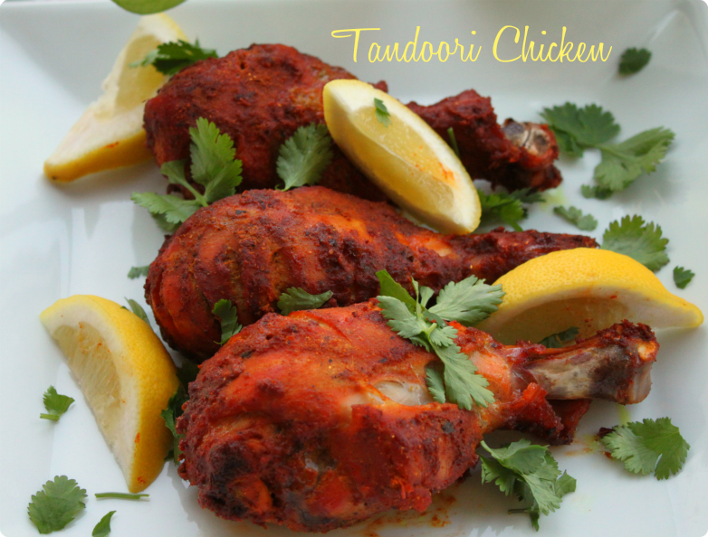
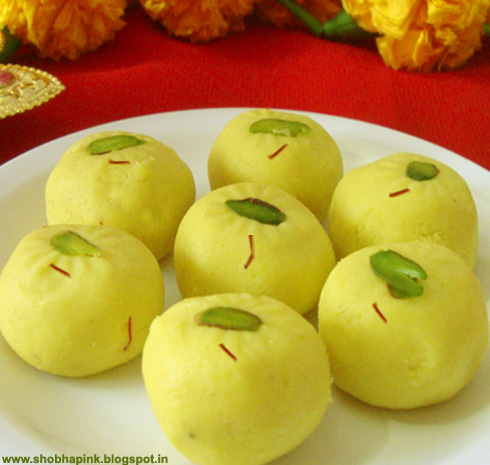

I always have a passion for cooking and sharing food. As technology has brought people together, I think food has the same power too!
I love to try out different recipes apart from our authentic Indian recipes. I do lot of 'food fusion', which means I mix and match cross cultural ingredients from different cultures to create my own recipes. Most of the time they turn out to be great, as I cook with my intuition.
I cook and share my home cooked meal during a potluck or sometimes at my work place too. I think I have made lot of friends by sharing my home cooked food😜
Lot of ideas of course I from the internet and You Tube. Back in India, I remember when I was a teenager, it was totally a different game. We mostly used to have family recipes and we had recipe books. Sometimes neighbors used to share a recipe via a handwritten note.
But today, with the privilege of having access to the internet over a phone, during leisure time I can just look over a unique recipe and tryout at home.
Today, I am going to direct you to two authentic Indian recipes, one from YouTube and the other from a website, Indian barbecue chicken known as 'Tandoori Chicken' and a Indian milk fudge dessert called as 'Peda'.
Hope you will try and enjoy them at home and you may contact me with any questions.
Recipes
- Tandoori Chicken: Indian BBQ Chicken
- Peda, Milk Fudge: Indian Dessert